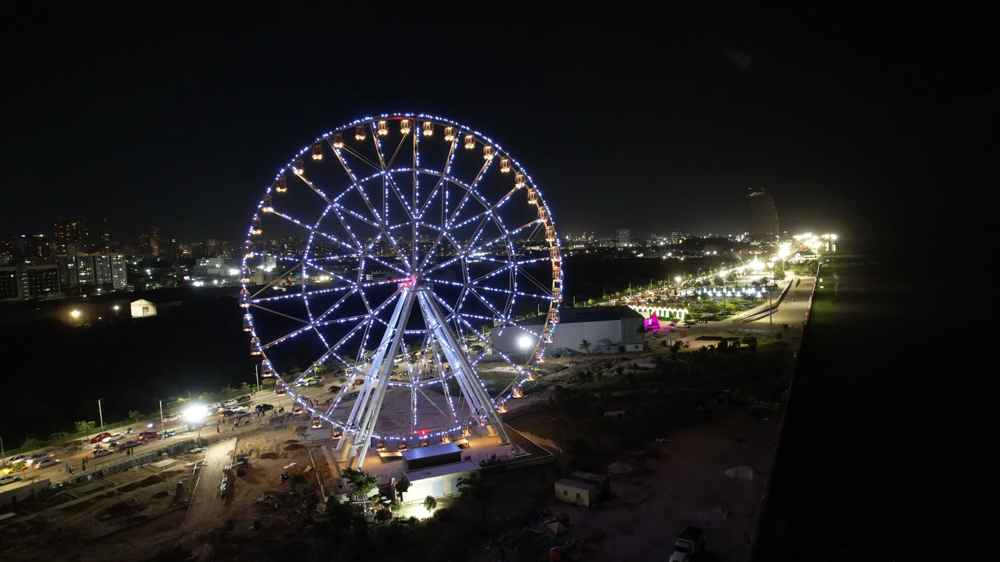
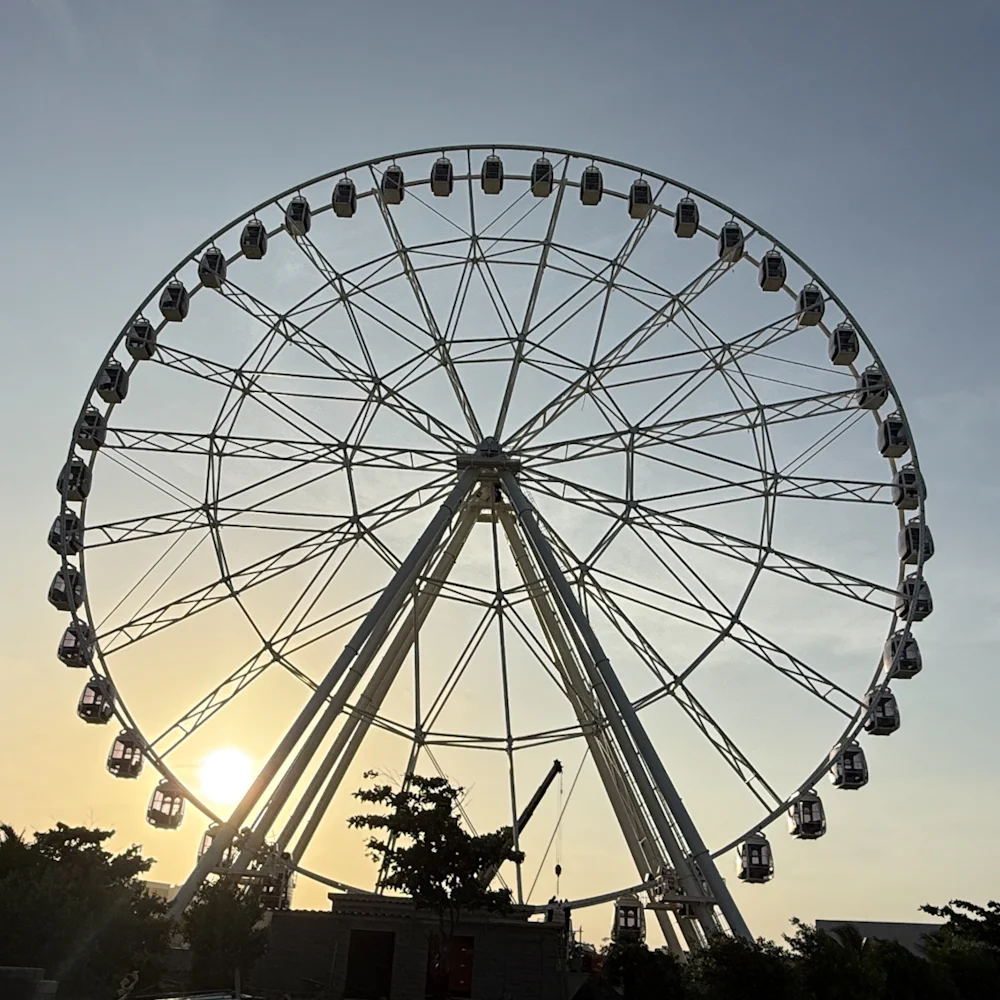
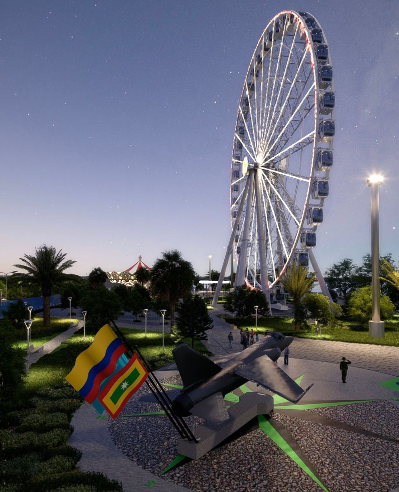
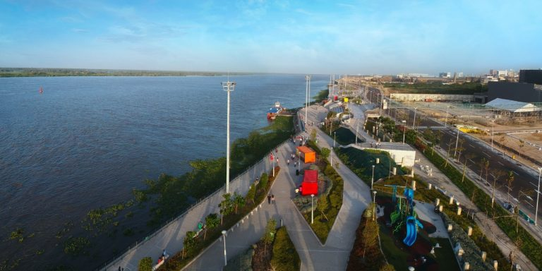
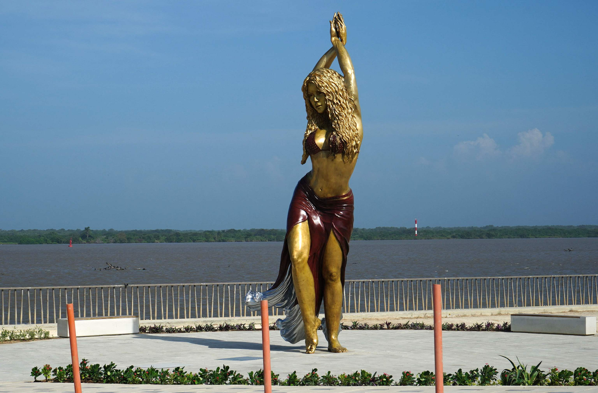

Conoce el escenario con el cual Barranquilla le volvió a dar la cara al río, ícono de transformación de ciudad.





En el malecon mcos encontramos con una serie de normas y regulaciones que buscan garantizar la seguridad, el orden y el disfrute de todos los visitantes. Algunas de las normas comunes en el malecon incluyen:

El Gran Malecón es un espacio que alberga una gran variedad de flora y fauna, por lo que es importante respetar su hábitat y no dañarlos.

Utilizar los contenedores adecuados y mantener los espacios limpios
Respetar las señales de tráfico y las zonas designadas para el paso peatonal

Evita darles comida a los animales para prevenir dependencias y alterar su comportamiento natural

Utilizar los re recursos naturales de manera conciente y evitar desperdiciar agua y energia

En caso de permitirse, mantener las mascotas bajo control y recoger sus excrementos.

Seguir las indicaciones y reglamentos establecidas para garantizar la segurodad y conservacion del area
Evitar el consumo de alcohol en el aerea para mantener un ambiente seguro y respetuoso para todos los visitantes y residentes
Uso obligatorio de equipo de protección. Prohibido el ingreso a la pista de patinadores sin equipo de protección.